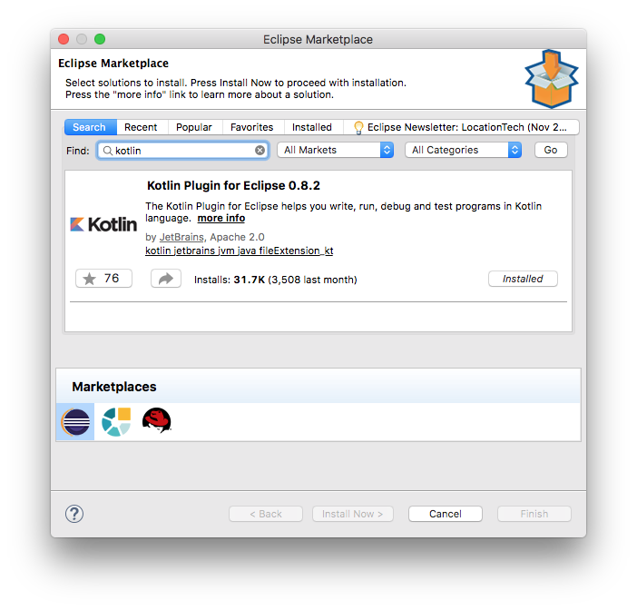
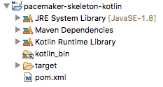
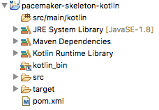
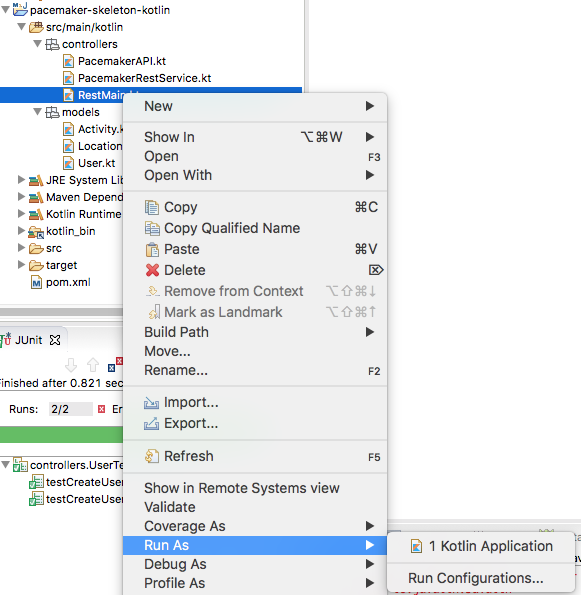
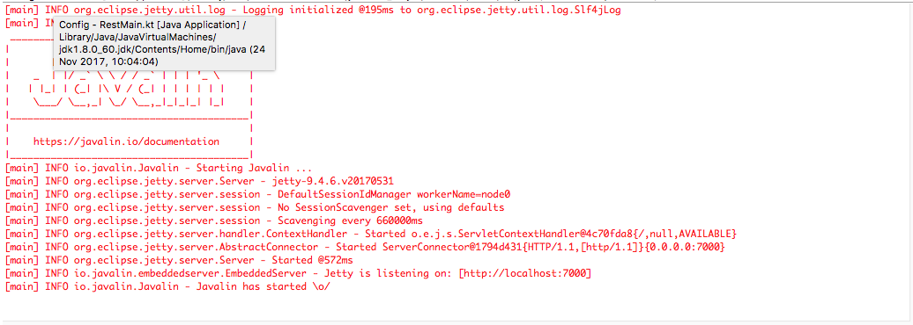
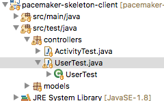

-
Objectives
Introduce a new project, an implementation of the service in Kotlin.
-
Lab 11 Exercise Solutions
Project Archives at this stage:
- https://github.com/wit-computing-msc-2017/pacemaker-skeleton/releases/tag/lab11.end
- https://github.com/wit-computing-msc-2017/pacemaker-skeleton-client/releases/tag/lab11.end
Exercise 4:
Evolve a set of tests to verify that locations can be added to activities.
Solution
In pacemaker-skeleton-client, we need an additional method in the PacemakerInterface:
@GET("/users/{id}/activities/{activityId}/locations") Call<List<Location>> getLocations(@Path("id") String id, @Path("activityId") String activityId);... and this matching method in PacemakerAPI:
public List<Location> getLocations(String id, String activityId) { List<Location> locations = null; try { Call<List<Location>> call = pacemakerInterface.getLocations(id, activityId); Response<List<Location>> response = call.execute(); locations = response.body(); } catch (Exception e) { System.out.println(e.getMessage()); } return locations; }With these methods in place, this new test in ActivityTest should pass:
@Test public void testCreateActivityWithSingleLocation() { pacemaker.deleteActivities(homer.id); Activity activity = new Activity("walk", "shop", 2.5); Location location = new Location(12.0, 33.0); Activity returnedActivity = pacemaker.createActivity(homer.id, activity.type, activity.location, activity.distance); pacemaker.addLocation(homer.id, returnedActivity.id, location.latitude, location.longitude); List<Location> locations = pacemaker.getLocations(homer.id, returnedActivity.id); assertEquals (locations.size(), 1); assertEquals (locations.get(0), location); }Verify that this test runs successfully.
This test should also run:
@Test public void testCreateActivityWithMultipleLocation() { pacemaker.deleteActivities(homer.id); Activity activity = new Activity("walk", "shop", 2.5); Activity returnedActivity = pacemaker.createActivity(homer.id, activity.type, activity.location, activity.distance); locations.forEach (location -> pacemaker.addLocation(homer.id, returnedActivity.id, location.latitude, location.longitude)); List<Location> returnedLocations = pacemaker.getLocations(homer.id, returnedActivity.id); assertEquals (locations.size(), returnedLocations.size()); assertEquals(locations, returnedLocations); }These imports are required:
import models.Location; import static models.Fixtures.locations; import java.util.List;Notice that we are no longer using the id field in the Location class. We should remove it now as it is not neccessary in our current implementation. Be sure to remove in both client and server projects.
To ensure your refactoring of the Location classes hasn't disrupted anything, rerun your tests.
-
Kotlin
In eclipse, visit the Eclipse Marketplace (Help->Eclipse Marketplace), locate and install the Kotlin plugin:

You may need to restart eclipse.
Outside of Eclipse, create a new folder called
pacemaker-skeleton-kotlin, and create this newpom.xmlfile:<project xmlns="http://maven.apache.org/POM/4.0.0" xmlns:xsi="http://www.w3.org/2001/XMLSchema-instance" xsi:schemaLocation="http://maven.apache.org/POM/4.0.0 http://maven.apache.org/xsd/maven-4.0.0.xsd"> <modelVersion>4.0.0</modelVersion> <groupId>pacemaker</groupId> <artifactId>pacemaker-skeleton-kotlin</artifactId> <version>1.0</version> <packaging>jar</packaging> <name>pacemaker-skeleton</name> <url>http://maven.apache.org</url> <properties> <project.build.sourceEncoding>UTF-8</project.build.sourceEncoding> <maven.compiler.source>1.8</maven.compiler.source> <maven.compiler.target>1.8</maven.compiler.target> <kotlin.version>1.1.60</kotlin.version> </properties> <build> <sourceDirectory>src/main/kotlin</sourceDirectory> <testSourceDirectory>src/test/kotlin</testSourceDirectory> <plugins> <plugin> <groupId>org.apache.maven.plugins</groupId> <artifactId>maven-compiler-plugin</artifactId> <version>3.7.0</version> <configuration> <source>1.8</source> <target>1.8</target> </configuration> </plugin> <plugin> <groupId>org.jetbrains.kotlin</groupId> <artifactId>kotlin-maven-plugin</artifactId> <version>${kotlin.version}</version> <executions> <execution> <id>compile</id> <phase>compile</phase> <goals> <goal>compile</goal> </goals> </execution> <execution> <id>test-compile</id> <phase>test-compile</phase> <goals> <goal>test-compile</goal> </goals> </execution> </executions> </plugin> <plugin> <artifactId>maven-assembly-plugin</artifactId> <executions> <execution> <phase>package</phase> <goals> <goal>single</goal> </goals> </execution> </executions> <configuration> <descriptorRefs> <descriptorRef>jar-with-dependencies</descriptorRef> </descriptorRefs> <archive> <manifest> <mainClass>controllers.RestMainKt</mainClass> </manifest> </archive> </configuration> </plugin> <plugin> <groupId>com.heroku.sdk</groupId> <artifactId>heroku-maven-plugin</artifactId> <version>1.1.3</version> <configuration> <jdkVersion>1.8</jdkVersion> <appName>YOUR APP NAME</appName> <processTypes> <web>java -jar ./target/pacemaker-skeleton-kotlin-1.0-jar-with-dependencies.jar</web> </processTypes> </configuration> </plugin> </plugins> </build> <dependencies> <dependency> <groupId>junit</groupId> <artifactId>junit</artifactId> <version>4.12</version> <scope>test</scope> </dependency> <dependency> <groupId>com.google.guava</groupId> <artifactId>guava</artifactId> <version>23.0</version> </dependency> <dependency> <groupId>asg-cliche</groupId> <artifactId>asg-cliche</artifactId> <version>1.0</version> </dependency> <dependency> <groupId>java-ascii-table</groupId> <artifactId>java-ascii-table</artifactId> <version>1.0</version> </dependency> <dependency> <groupId>io.javalin</groupId> <artifactId>javalin</artifactId> <version>0.5.1</version> </dependency> <dependency> <groupId>org.slf4j</groupId> <artifactId>slf4j-simple</artifactId> <version>1.7.21</version> </dependency> <dependency> <groupId>com.fasterxml.jackson.core</groupId> <artifactId>jackson-databind</artifactId> <version>2.9.1</version> </dependency> </dependencies> </project>In Eclipse, import the folder as a Maven project.

Notice the project does not have a source folder yet. Create this folder structure now (on the command line or using Explorer/Finder)
└── src ├── main └──kotlinBack in Eclipse, refresh the project - and the (empty) source folder should appear:

-
Models
Note: when coding in Kotlin, you might find it easier to switch to the Kotlin perspective in Eclipse (see the buttons on the top right hand corner of Eclipse).
Create a new package in the src/main/kotlin folder called
models, and create three new Kotlin classes:
- Location
- Activity
- User

These are the sources for these classes:
Location
package models data class Location( val latitude: Double, val longitude: Double)Activity
package models import java.util.UUID data class Activity( var type: String = "", var location: String = "", var distance: Float = 0.0f, var id: String = UUID.randomUUID().toString(), val route: MutableList<Location> = ArrayList())User
package models import java.util.UUID data class User( val firstname: String = "", val lastname: String = "", val email: String = "", val password: String = "", var id: String = UUID.randomUUID().toString(), val activities: MutableMap<String, Activity> = hashMapOf<String, Activity>())These are Kotlin Data Classes - they are functionally equivalent to the Java equivalents from pacemaker-skeleton, with much of the extra methods auto-generated.
-
controllers User Endpoints
Create three Kotlin classes in a new controllers package:

- PacemakerAPI
- PacemakerRestService
- RestMain
These are the sources:
PacemakerAPI
package controllers import java.util.UUID; import models.Activity import models.Location import models.User class PacemakerAPI { var userIndex = hashMapOf<String, User>() var emailIndex = hashMapOf<String, User>() var activitiesIndex = hashMapOf<String, Activity>() var users = userIndex.values fun createUser(firstName: String, lastName: String, email: String, password: String): User { var user = User(firstName, lastName, email, password) userIndex[user.id] = user emailIndex[user.email] = user return user } fun deleteUsers() { userIndex.clear(); emailIndex.clear() } fun getUser(id: String) = userIndex[id] fun getUserByEmail(email: String) = emailIndex[email] }PacemakerRestService
package controllers import io.javalin.Context import models.Activity import models.Location import models.User class PacemakerRestService { val pacemaker = PacemakerAPI() fun listUsers(ctx: Context) { ctx.json(pacemaker.users) } fun createUser(ctx: Context) { val user = ctx.bodyAsClass(User::class.java) val newUser = pacemaker.createUser(user.firstname, user.lastname, user.email, user.password) ctx.json(newUser) } fun deleteUsers(ctx: Context) { pacemaker.deleteUsers() ctx.status(200) } }RestMain
package controllers import io.javalin.Javalin fun main(args: Array<String>) { val app = Javalin.create().port(getHerokuAssignedPort()).start() val service = PacemakerRestService() configRoutes(app, service) } private fun getHerokuAssignedPort(): Int { val processBuilder = ProcessBuilder() return if (processBuilder.environment()["PORT"] != null) { Integer.parseInt(processBuilder.environment()["PORT"]) } else 7000 } fun configRoutes(app: Javalin, service: PacemakerRestService) { app.get("/users") { ctx -> service.listUsers(ctx) } app.post("/users") { ctx -> service.createUser(ctx) } app.delete("/users") { ctx -> service.deleteUsers(ctx) } }You should be able to run the application now:


This is supporting the users endpoint - making the service available on http://localhost:7000
We already have a set of tests built to exercises these routes - in
UsersTestin pacemaker-skeleton-client.
Run these test now - they should pass:

The service is implemented in Kotlin - the tests are in Java.
-
controllers Activity Endpoints
Initial activity endpoints can now be implemented:
PacemakerAPI
fun createActivity(id: String, type: String, location: String, distance: Float): Activity? { var activity:Activity? = null var user = userIndex.get(id) if (user != null) { activity = Activity(type, location, distance) user.activities[activity.id] = activity activitiesIndex[activity.id] = activity; } return activity; } fun getActivity(id: String): Activity? { return activitiesIndex[id] } fun deleteActivities(id: String) { require(userIndex[id] != null) var user = userIndex.get(id) if (user != null) { for ((u, activity) in user.activities) { activitiesIndex.remove(activity.id) } user.activities.clear(); } }PacemakerRestService
fun getActivity(ctx: Context) { // val userId: String? = ctx.param("id") val activityId: String? = ctx.param("activityId") val activity = pacemaker.getActivity(activityId!!) if (activity != null) { ctx.json(activity) } else { ctx.status(404) } } fun getActivities(ctx: Context) { val id: String? = ctx.param("id") val user = pacemaker.getUser(id!!) if (user != null) { ctx.json(user.activities) } else { ctx.status(404) } } fun createActivity(ctx: Context) { val id: String? = ctx.param("id") val user = pacemaker.getUser(id!!) if (user != null) { val activity = ctx.bodyAsClass(Activity::class.java) val newActivity = pacemaker.createActivity(user.id, activity.type, activity.location, activity.distance) ctx.json(newActivity!!) } else { ctx.status(404) } } fun deleteActivites(ctx: Context) { val id: String? = ctx.param("id") pacemaker.deleteActivities(id!!); ctx.status(204) }RestMain
app.get("/users/:id/activities") { ctx -> service.getActivities(ctx) } app.get("/users/:id/activities/:activityId") { ctx -> service.getActivity(ctx) } app.post("/users/:id/activities") { ctx -> service.createActivity(ctx) } app.delete("/users/:id/activities") { ctx -> service.deleteActivites(ctx) }We can now try the ActivityTest from pacemaker-skeleton-client:

Notice that the location endpoints are failing - as we have not yet implemented them.
Note: if more of your tests have errors in them when compared with the above graphic, you might need to stop the Kotlin Rest service and restart it (to pick up the above changes).
-
Exercises
Lab 12 Archive:
Archive of this lab so far:
Archive of collected labs to date:
Archive of ALL labs (from lab 08 to lab 12) :
See accompanying video tour of the labs in this archive.
Project Submission Form (ppt file)
When submitting your final project, please download and complete the above pptx form outlining your approach and achievements in the project.
Exercise 1:
Implement the location endpoints so that the ActivityTest all pass
Exercise
Deploy the application to Heroku. The same steps we have already carried out (in lab 11) can also be applied here.